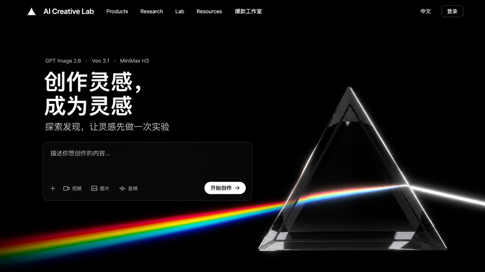
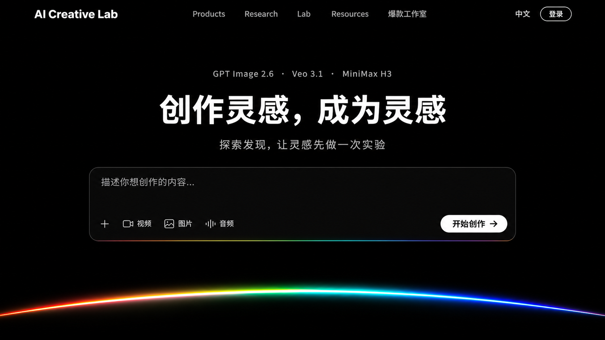
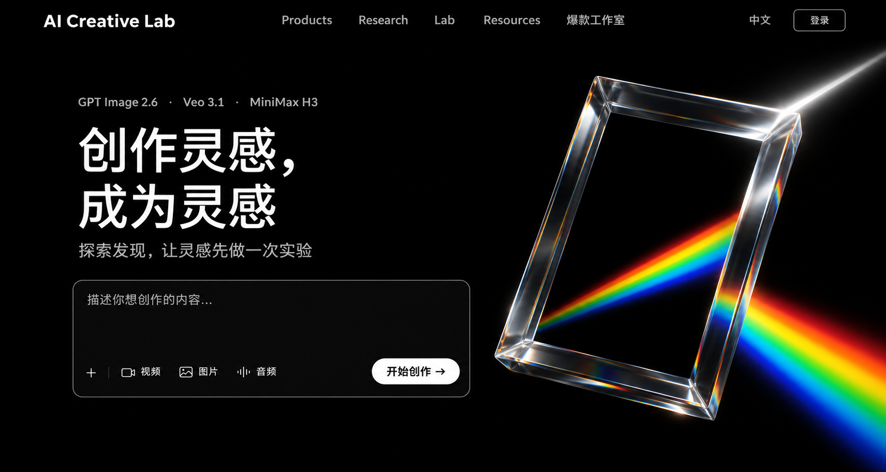

A · 棱镜折射
最接近参考图。左侧创作入口，右侧黑玻璃棱镜，彩虹光束穿过下方。

B · 光谱地平线
延续居中的创作入口，用底部光谱弧线点亮纯黑画面，输入框是视觉焦点。

C · 玻璃画框
让光谱穿过一块悬浮的玻璃画框，把光学质感与创作画布联系起来。

当前为桌面首屏视觉设计稿，图中的导航与输入框用于展示视觉效果。可用键盘 1 / 2 / 3 切换方案，0 查看三版。
纯黑背景 · 白色文字 · 彩虹折射光
最接近参考图。左侧创作入口，右侧黑玻璃棱镜，彩虹光束穿过下方。

延续居中的创作入口，用底部光谱弧线点亮纯黑画面，输入框是视觉焦点。

让光谱穿过一块悬浮的玻璃画框，把光学质感与创作画布联系起来。

当前为桌面首屏视觉设计稿，图中的导航与输入框用于展示视觉效果。可用键盘 1 / 2 / 3 切换方案，0 查看三版。